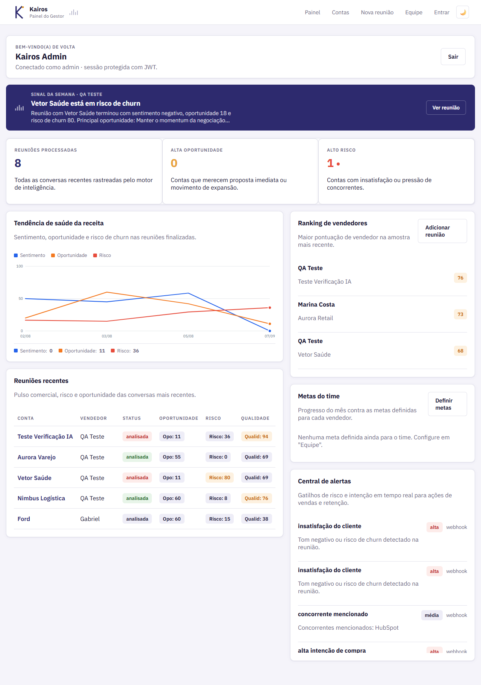
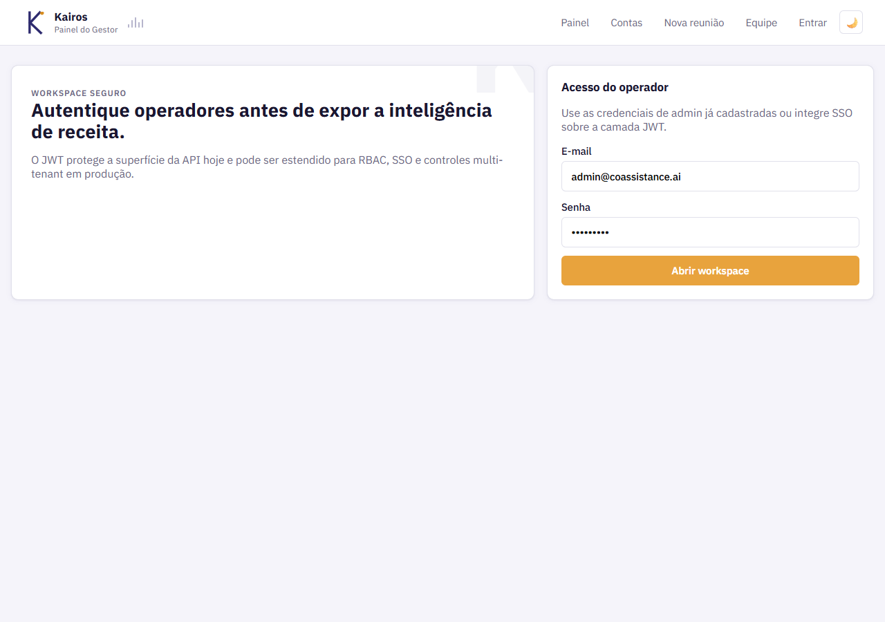
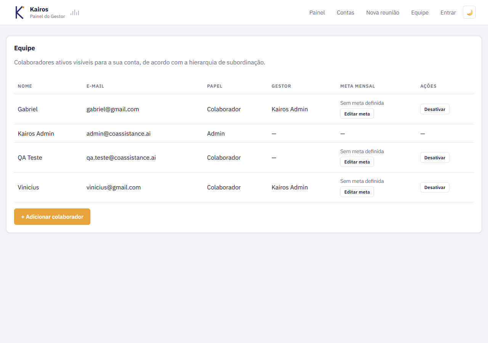
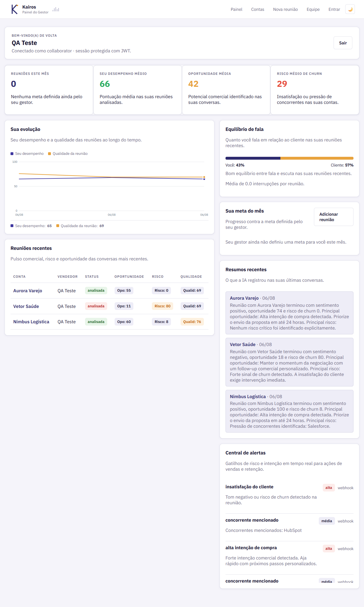

Dados que se perdem
Reuniões geram sinais valiosos de venda e de risco — que evaporam assim que a chamada termina.
kairós — o instante certo para agir
Kairos escuta reuniões comerciais, transcreve em tempo real e aponta exatamente o segundo em que um cliente sinaliza risco de churn — ou abre uma oportunidade — para que vendedores e gestores ajam enquanto ainda importa.
Parte 1O problema
00:00 — o sinal perdido
"O sistema atual atende bem no fechamento mensal, sem grandes urgências."
"Sinceramente, já recebemos uma proposta da concorrência com valor bem mais baixo."
"Se isso não for resolvido logo, vamos ter que avaliar cancelar o contrato."sinal perdido
"Podemos remarcar a reunião de amanhã pra quinta à tarde?"
Reuniões geram sinais valiosos de venda e de risco — que evaporam assim que a chamada termina.
Sai da call sem saber o próximo passo, sem registrar o sinal de churn nem a oportunidade de upsell.
Revisar reunião por reunião é subjetivo, inconsistente e não escala com o time comercial.
Parte 2A solução
00:05 — o produto
Duas frentes, um só sistema: um painel web para o gestor acompanhar o time, e uma captura ao vivo que analisa a reunião do vendedor em tempo real. Sem mockup — estas são telas reais.




Fala a língua do seu ERP
e reconhece na hora quando SAP, Senior, Sankhya, Linx, CIGAM ou Oracle aparecem na conversa
00:09 — o motor
Três olham receita. Três olham relacionamento e risco.
Receita
Upsell, cross-sell e novos produtos identificados dentro da própria conversa.
Em uso, lacunas e oportunidades dentro do próprio portfólio TOTVS.
Tempo de escuta, perguntas abertas e próximos passos combinados.
Relacionamento & risco
Risco, concorrente citado e insatisfação — sinalizados no exato instante em que aparecem.
Decisor, influenciador ou técnico — e o sentimento de cada um sobre a proposta.
Por produto e no geral — a temperatura real da conta, não a impressão do vendedor.
00:12 — a linha do tempo
A extensão detecta a reunião e começa a capturar o áudio, sem sair da chamada.
Legendas viram texto estruturado, por falante, em tempo real.
O motor de IA cruza a fala com os seis pilares e marca cada instante relevante.
Vendedor e gestor recebem o plano de ação — enquanto o instante ainda vale alguma coisa.
Parte 3O impacto
00:16 — a diferença
Sem Kairos
Com Kairos
00:18 — o resultado
Primeiro piloto real: reuniões comerciais de uma concessionária de veículos, analisadas pelo Kairos de ponta a ponta.
Piloto em concessionária de veículos — clientes atendidos em reuniões comerciais que avançaram até o fechamento, no período analisado pelo Kairos.
id: proximo-piloto · adicione aqui o gráfico do próximo teste (outro setor, período maior, comparação antes/depois)
Mostramos o Kairos rodando com uma reunião real da sua equipe — sem enrolação.
Falar com o time Kairos